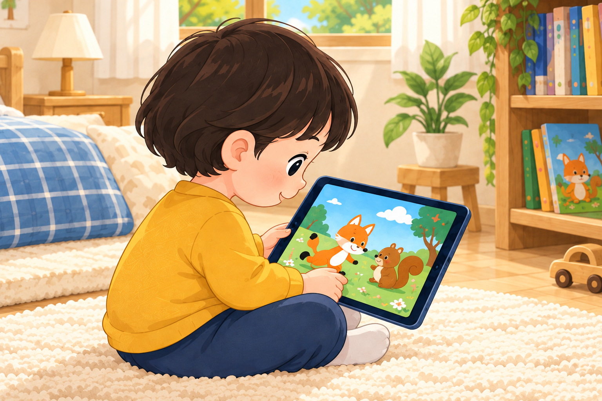
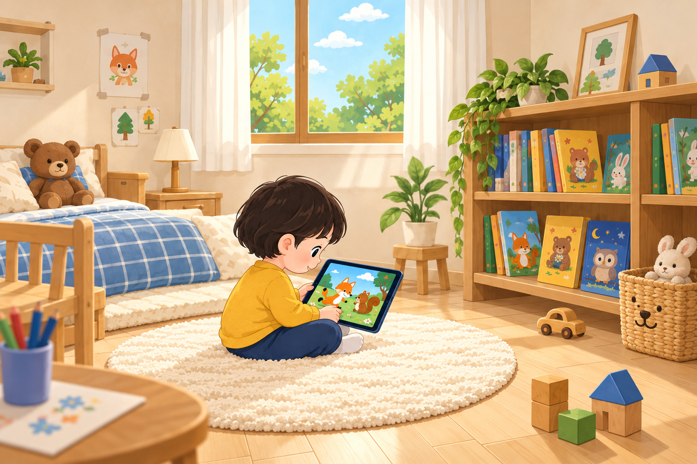
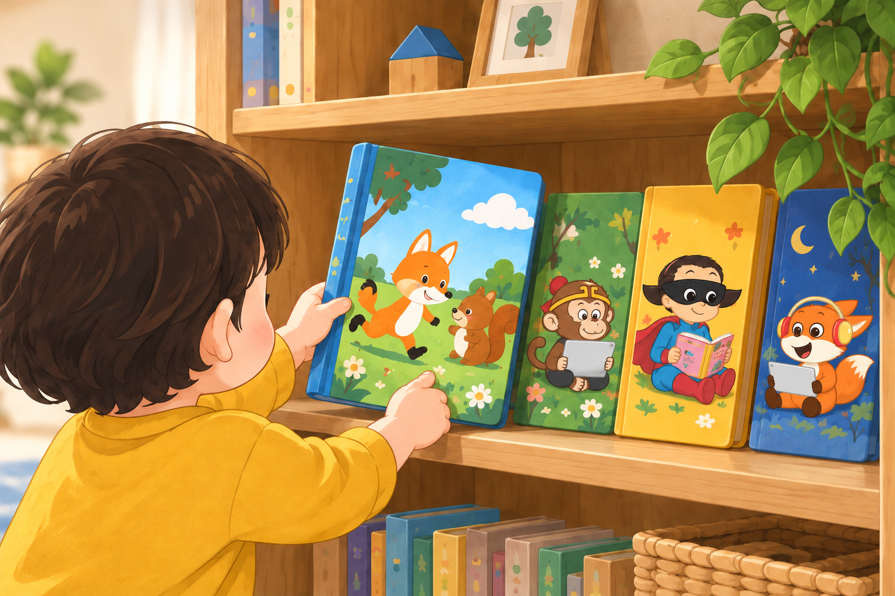

는
는
애니메이션 영어 영상과
동화 책(eBook, Printable Book)을
마음껏 보고 읽을 수
있는
 입니다.
입니다.
매월 진행되는 CLASS 를 통해
듣기, 읽기 뿐만 아니라
말하기,
쓰기 실력까지 키울 수 있습니다.
CH 01


 는
는
애니메이션 영어 영상과
동화 책(eBook, Printable Book)을
마음껏 보고 읽을 수
있는
입니다.
매월 진행되는 CLASS 를 통해
듣기, 읽기 뿐만 아니라
말하기,
쓰기 실력까지 키울 수 있습니다.
듣고 읽는 즐거움에서, 말하고 쓰는 자신감까지.


Hi, how are you.
차고 넘치도록 영어 영상을 들어야(Listening) 하고, 영어 책도 읽어야(Reading) 합니다. 상대가 말하는 것을 알아들어야 말을 할 수 있고(Speaking), 읽고 이해할 수 있어야 쓸 수 있기(Writing) 때문입니다.
2000년에 리틀팍스를 만들고, 20년 넘게 오직 이해하기 쉽고 재미있는
애니메이션 영어 영상과 동화 책 제작에만 전념해왔습니다.
2020년부터는 영상과 책 제작을 넘어, 리틀팍스 CLASS를 만들어
영어 학습 전반을 직접 이끄는 역할을 하고 있습니다.

01 · 영어도 듣기부터
파닉스와 단어 암기, 문법으로 시험만 대비하는 영어가 아닙니다. 세계 어디서든 자유롭게 말하고 쓸 수 있으려면, 듣기부터 시작해야 합니다.
아이들이 한글을 익히듯, 듣기가 차고 넘치면 영어가 들리고 말이 나옵니다. 하루 1시간, 약 3년(1,000시간). 소리로 익힌 영어를 읽고, 말로 하던 영어를 글로 써 갑니다.

02 · 가능한 일찍
영어를 파닉스부터 시작한다면, 문자를 인지할 수 있는 유초등 시기부터 영어를 학습할 수밖에 없습니다.
그러나 듣기부터 시작한다면, 영어에 대한 거부감이 없는 영유아기부터 쉽고 재미있는 영어 동화 영상으로 영어를 습득해 갈 수 있습니다. 이 시기의 아이들은 언어습득장치(Language Acquisition Device)가 가장 활발하게 작동하는 언어 천재이기 때문입니다.

03 · 쉽고 재미있게
영어는 6~10년 동안 지치지 않고 꾸준히 지속해야 하므로, 이해하기 쉽고 재미있는 영어 영상과 동화책을 사용해야 합니다. 어렵고 재미가 없으면 힘들어서 중도에 포기할 수밖에 없습니다.
영어 영상과 동화책을 사용하더라도 이른 시기의 지나친 암기와 테스트, 지루한 반복 연습, 아이의 성향을 고려하지 않은 강압적인 지도는 아이와 부모 모두를 지치게 합니다.
아이가 좋아하는 영상과 책을 마음껏 골라 보고 읽을 수 있는 환경을 만들고, 칭찬과 격려로 기다려 주었을 때 영어는 습득될 수 있습니다.
동화 구성 비율
주제별 구성 비율
| 단계 | 미국 학교 Reading Level |
편수 | Animation | eBook + Printable Book |
|---|---|---|---|---|
| 편당 시간 | 형태 | |||
| 1 | Kinder-Grade 1 | 512 | 2.5분 | Picture Book |
| 2 | Grade 1 | 908 | 3.0분 | |
| 3 | Grade 1-2 | 802 | 3.5분 | |
| 4 | Grade 2 | 909 | 4.5분 | Early Chapter Book |
| 5 | Grade 3 | 661 | 5.5분 | Chapter Book |
| 6 | Grade 3-4 | 784 | 7.0분 | |
| 7 | Grade 4-5 | 573 | 7.5분 | Children's Novel |
| 8 | Grade 5-6 | 452 | 8.5분 | |
| 9 | Grade 6 | 226 | 9.0분 |